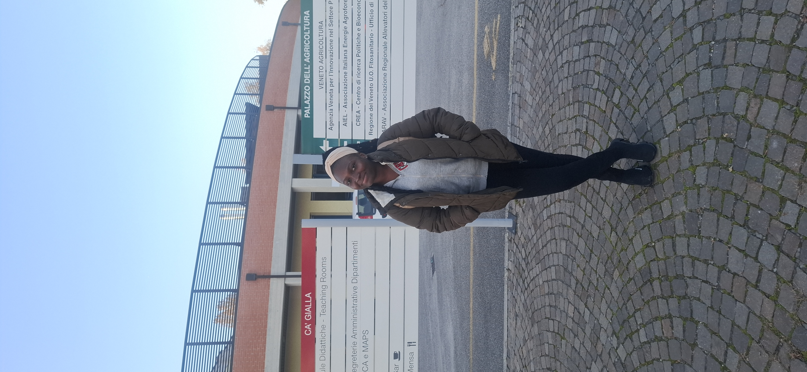

My Story

A journey shaped by curiosity
I’m Rachel Nana Asiedua Yeboah, a Ghanaian biotechnology researcher with a passion for food science, sustainable agriculture, innovation, and creating opportunities for young people.
My journey has been shaped by curiosity, resilience, and a deep desire to understand how science can be used to solve real-world problems.
That journey has taken me from Ghana to Italy, where I am completing my Master’s degree in Biotechnologies for Food Science at the University of Padova.
This milestone represents far more than a degree. It represents learning, sacrifice, discovery, persistence, growth, and the people who encouraged me along the way.
Every classroom, experiment, challenge and opportunity has become part of the story that brought me here.